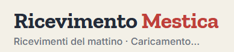
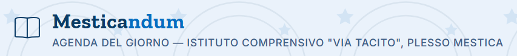
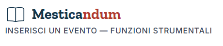
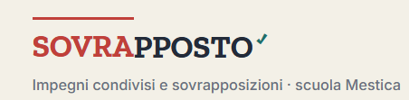
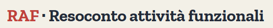
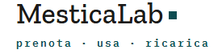
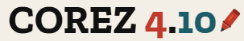
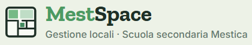

SOStituto
Gestione delle sostituzioni dei docenti assenti, con registro dei recuperi e prospetti stampabili.

Ore di ricevimento
Indicazione della propria ora di ricevimento per i docenti.

Mesticandum
Strumento per la scuola.

Mesticandum Eventi
Gestione degli eventi della scuola.

Sovrapposto
Tracciamento degli impegni dei docenti con cattedra su più scuole.

RAF
Resoconto Attività Funzionali: consuntivo delle ore dei docenti.

GEclass
Strumento per la gestione delle classi.

MesticaLab
Prenotazione dei laboratori di informatica per i docenti della scuola.

COREZ 4.10
Correzione delle verifiche.

MestSpace
Gestione dei locali della scuola secondaria Mestica.